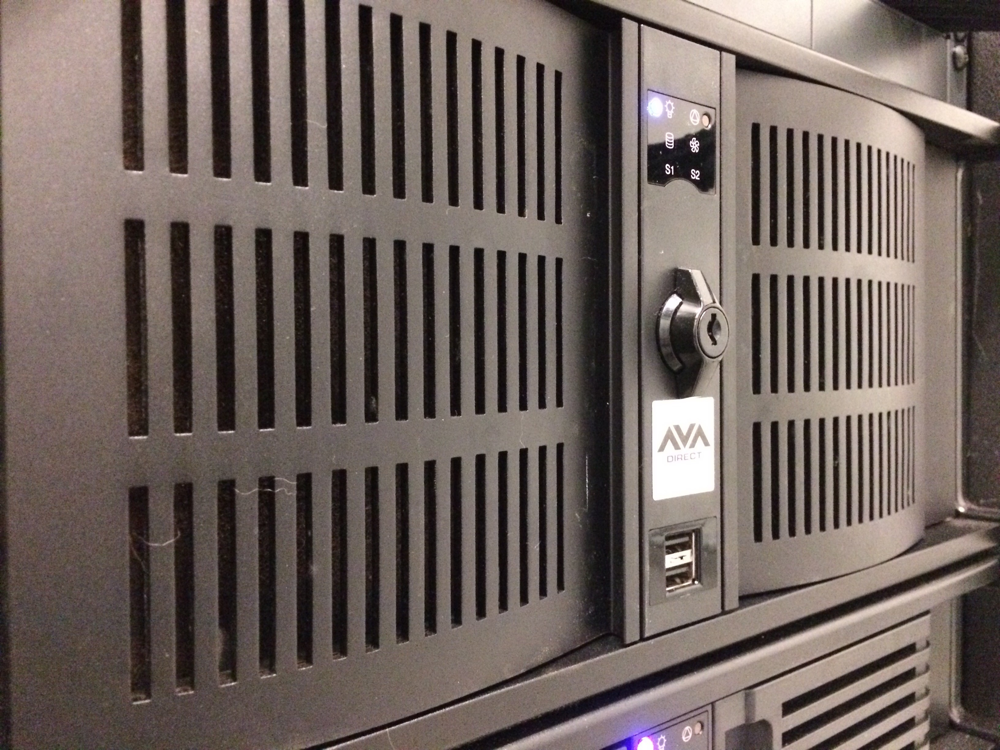
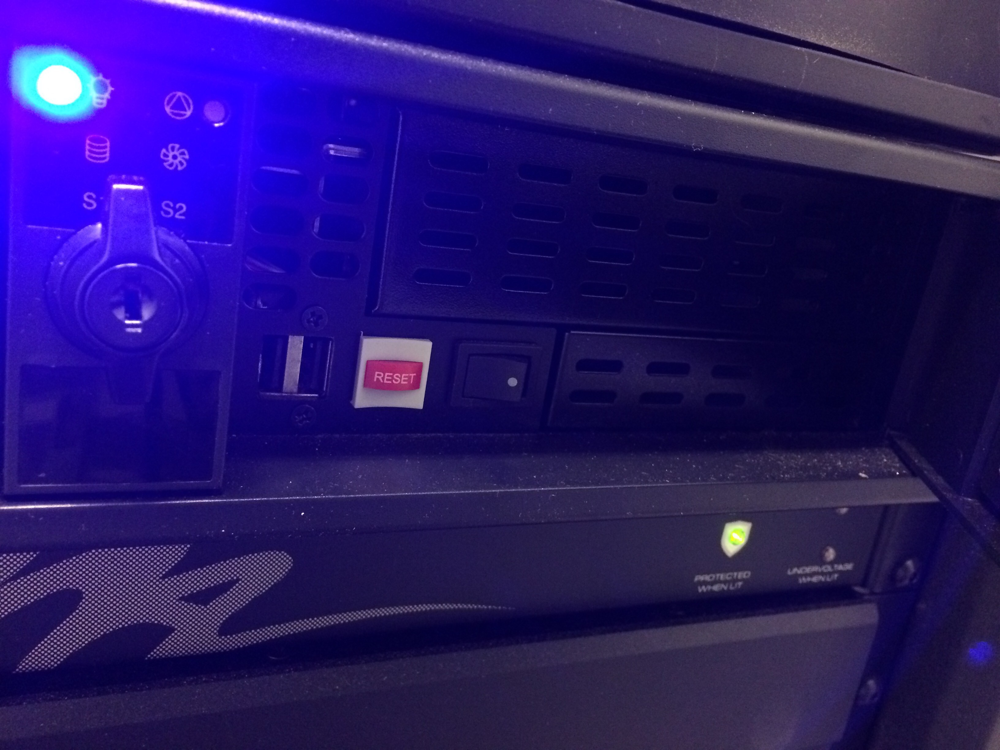
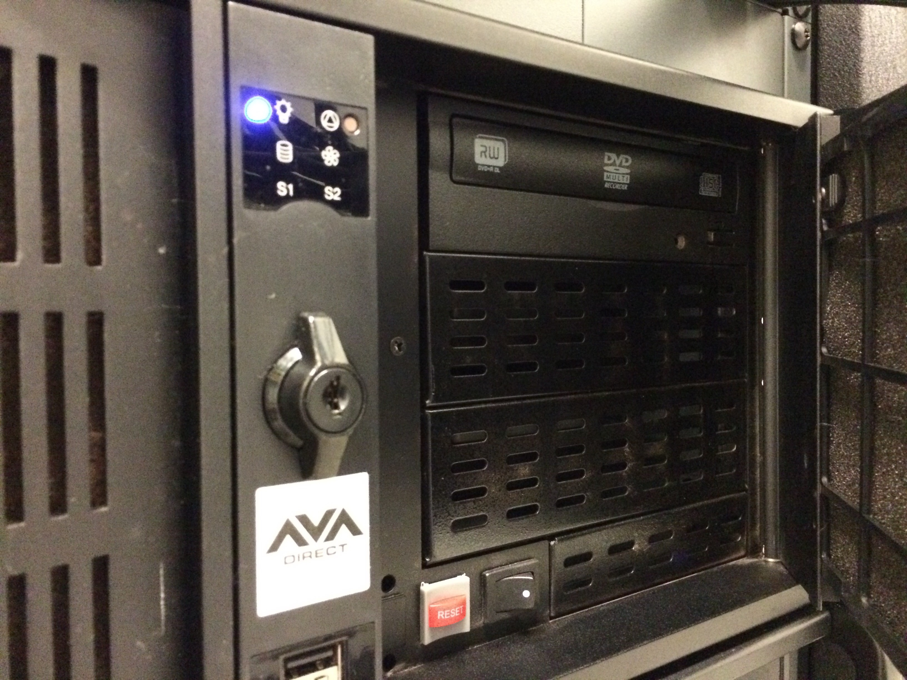
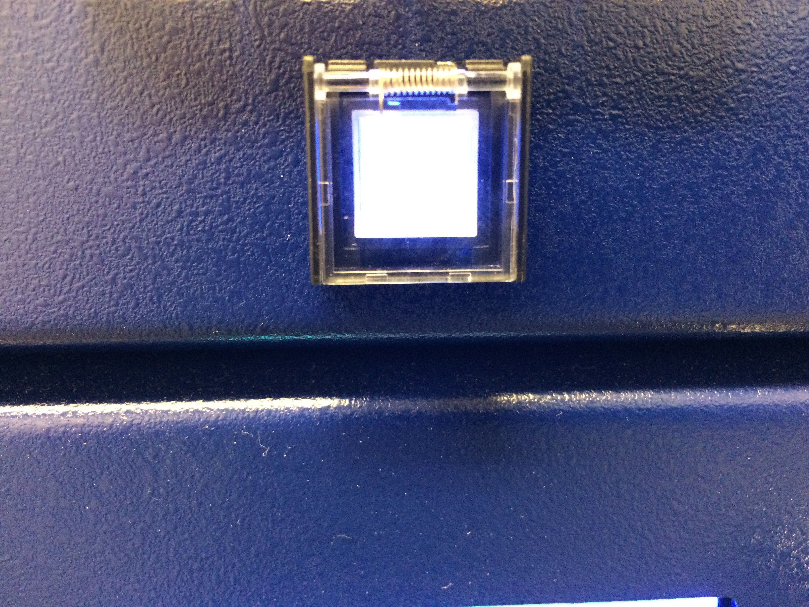

Documentation on the Lightbox Gallery for collaborators and operators
The closet is room number 0741. It can be accessed via the white double doors next to the collections management office, or via the glass double doors by security.
Getting into the hallway that leads to the network closet requires a PIN; if you are a museums employee, speak to security about setting one up.
The larger of the two PCs controls the nine screens, while the narrower controls the two projectors. DVI cables carry the AV signals from the PCs to input boxes connected to the Vista Spyder 20Xs and the Crestron Pro-3, from which Ethernet cables carry the signals up to the fifth floor. Other arrangements are occassionally devised based on the needs of the project.
What you are trying to do will determine where you should access these PCs. Tasks requiring a display and input devices, such as downloading a file from Dropbox, should be completed upstairs.
USB ports are available on the front of each PC. In order to access the ones on the projector PC, open the righthand panel on its front.
The screen PC has a disk drive, which similarly can be accessed by opening the panel on its front.
To turn all of the equipment on or off—for example, in advance of and after a power outage—first turn off the PCs, either by shutting them down using the keyboards upstairs or by pressing the power buttons on the fronts of the two PCs. Then turn off the Vista Spyders by lifting the clear boxes on their fronts and pressing the buttons underneath. The Spyders can be turned on the same way, but the PCs can only be turned on in the network closet.
If the PCs have been turned off, this is the only place from which they can be turned on: simply press the power button on the relevant device(s).